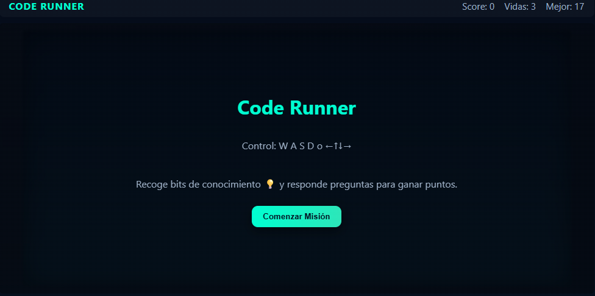
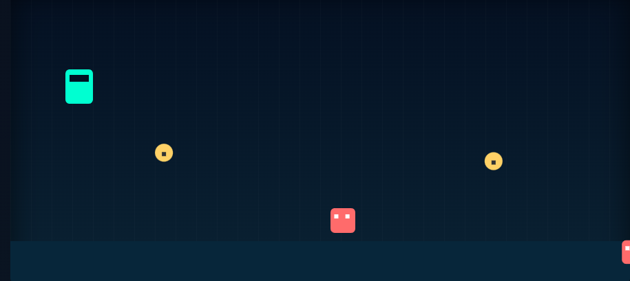

Code Runner es un juego educativo creado con tecnologías web. Su propósito es enseñar conceptos básicos de informática mediante un entorno interactivo y entretenido. El proyecto utiliza HTML, CSS, JavaScript y PHP con MySQL para su funcionamiento completo.
INCOS - Instituto Comercial Superior de la Nación INCOS EL ALTO
El archivo styles.css define el aspecto gráfico del juego. Se usó una estética moderna, con colores brillantes y un fondo oscuro para resaltar los elementos del escenario.
El archivo script.js controla toda la dinámica del juego, desde el movimiento hasta las preguntas educativas
El juego puede complementarse con un sistema de registro de usuarios y estadísticas en línea. Esta parte se maneja mediante PHP y una base de datos MySQL.
| Archivo | Función |
|---|---|
| HTML | Organiza la estructura y las pantallas del juego |
| CSS | Define colores, tipografía y estilo visual |
| JavaScript | Controla movimientos, colisiones y preguntas |
| PHP/MySQL | Gestiona usuarios, estadísticas y ranking |
El juego ayuda a desarrollar habilidades prácticas y cognitivas:
El objetivo es enseñar conceptos de informática básica de manera divertida, integrando teoría y práctica.
La informática se ha vuelto una herramienta indispensable en todos los ámbitos. Cada empresa, negocio o institución necesita de personal capacitado para manejar computadoras, redes y programas. Por eso, estudiar Sistemas Informáticos es una muy buena opción para los jóvenes que buscan una carrera con futuro. Además, esta carrera no solo abre puertas laborales, sino que también enseña a pensar de manera lógica, resolver problemas y adaptarse a los cambios constantes de la tecnología
Una de las principales ventajas de estudiar en el INCOS es que su plan de estudios está bien estructurado y actualizado. En la carrera de Sistemas Informáticos se enseñan materias como
Cada materia tiene un enfoque práctico, lo que significa que los estudiantes no solo aprenden teoría, sino que también aplican sus conocimientos en proyectos reales.
Una de las razones más fuertes para estudiar esta carrera es la gran cantidad de oportunidades laborales que ofrece. Un técnico en Sistemas Informáticos puede trabajar como programador, encargado de redes, soporte técnico, diseñador web o incluso crear su propia empresa. La demanda de personal informático crece cada año, y los egresados del INCOS tienen una buena reputación por su formación práctica y responsable.
Posibilidad de emprender Además de trabajar en empresas, muchos egresados del INCOS optan por emprender. Con los conocimientos adquiridos, pueden ofrecer servicios de reparación, instalación de redes, diseño de páginas web o desarrollo de software. Esto permite que los jóvenes tengan independencia económica y puedan aplicar su creatividad.
Los estudiantes desarrollan proyectos innovadores y aplican tecnología de punta, fomentando la creatividad y el espíritu emprendedor.
Formar profesionales técnicos con capacidad analítica, creativa y práctica, comprometidos con la innovación tecnológica y el desarrollo del país.
Ser una institución líder en educación técnica, reconocida por la excelencia académica, la calidad humana de sus docentes y su aporte al avance tecnológico de Bolivia.